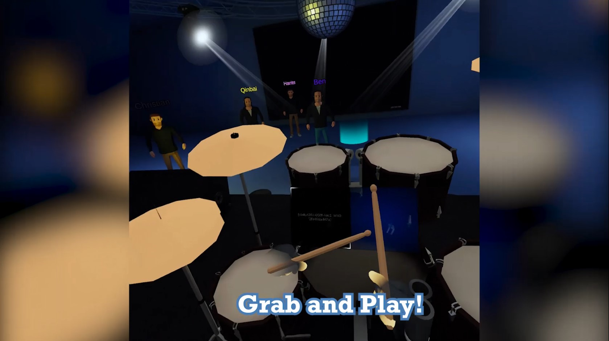
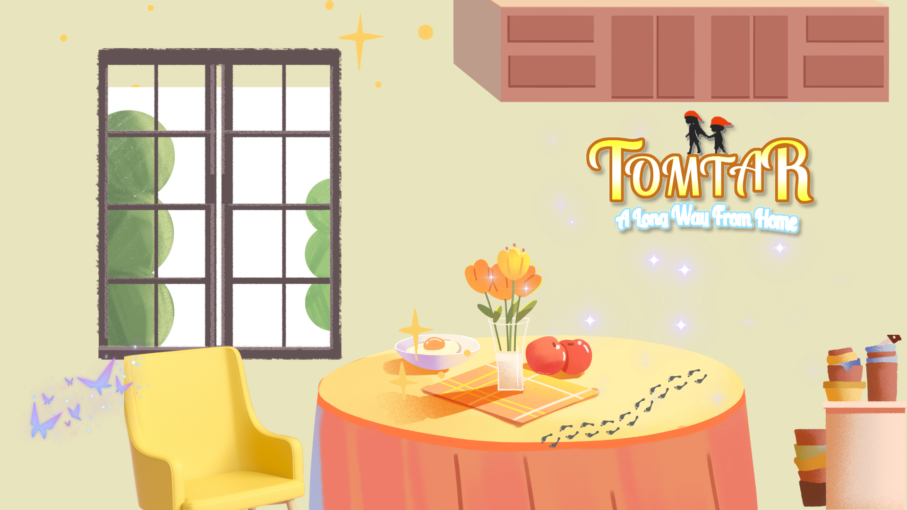
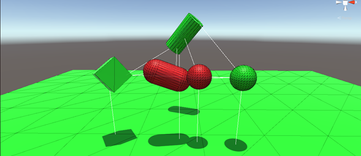
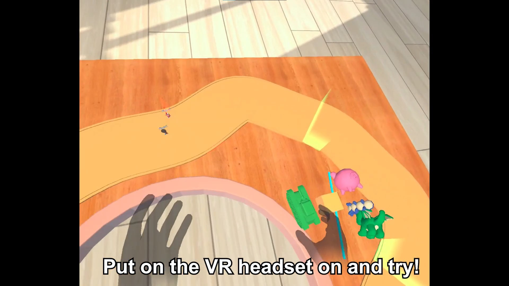
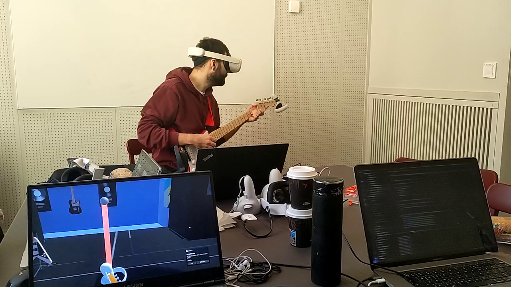

Welcome to my portfolio! I'm Christian, a passionate nerdy gamer with a love for all things fantasy and science. I hold a Bachelor of Science degree in Computer & Systems Science specializing in Game Development, and a Master of Science degree in Computer Science specializing in Interactive Media Technology.
I currently work with R&D of combat flight simulation at the Swedish Defence Research Agency.
[Click here to read more about me in my BIO].
Below are projects I've enjoyed working on. You can also explore links in the navigation bar above (or menu button on mobile) to other sites with more of my work.
Master's Thesis
My master's project, in which I investigated cybersickness in a VR and MR flight simulator, for the Swedish Air Force Combat Simulation Centre.
I independently developed the flight simulator in Unreal Engine 5 for the headset Varjo XR-3.
• Independent research
• Cesium terrain generation
• JSBSim flight dynamics model
• VR and MR in Unreal Engine

5 person VR project
A prototype of a VR concert held hybridly, online and physical. The VR player can play on instruments along to music tracks. A co-located audience can join as avatars with their smartphones, and interact with the music band.
I worked with:
• Oculus Quest 2 VR framework in Unity
• Arduino
• Project management

5 person Game project
A game design project during a master's course. The game was aimed at younger players while still being fun
for adults. I contributed to the design and development of the whole game but mainly focused on:
• Game & Level Design
• Gameplay Programming
• Environment Lighting

Solo programming project
A project I worked on for a Computer Graphics/Interaction master's course. Independently, I researched
how a specific algorithm for collision detection worked, implemented it as a C# DLL to be used in Unity, evaluated
the performance and wrote a scientific report on the work. Can be summed up as:
• Math Programming

5 person VR project
A game in which a VR player competes against a physically co-located audience. I worked with:
• Project management
• Sound composing

5 person VR project
A prototype of a extended reality application where a physical guitar is visually replaced by a virtual guitar that has the unique feature of 'B-bending'. I worked with:
• Project management
• Framework research & design
• B-bending visualization
• Writing a large part of the report

5 person game project
A mobile rythm game project during a bachelor course. Working agilely with four others.
The course was about mobile game development and UX-design.
I mainly worked with:
• Design and programming of interactions
• Creating particle effects
• Optimizing input and performance for mobile

10 person game project
The final big game project during my bachelor studies. Working agilely with nine others, each with different roles.
A part of the course was also aimed at making the game more accessible. In this project I mainly worked with:
• Gameplay Programming
• VFX

5 person design project

A 5 person master project aimed at increasing the accessiblity for visitors with visual impairments in a museeum. The work was done collaboratively by all team-members.
5 person research project

Project work for a master course in Multimodal Interaction and Interfaces. We designed a game controlled by gaze and keyboard.
I was in charge of:
• Project management
• Designing the experiment
• Writing a large part of the report
5 person research project

Perceptual study for a master course in Human Perception for Information Technology. We investigated the effects that varying head rotations
of a small group of virtual agents in VR have on the group's perceived openness.
I was in charge of:
• Project management
• The technical setup
• Designing the experiment
• Writing a large part of the report
Other things I've worked on, worth checking out.
• Bachelor thesis